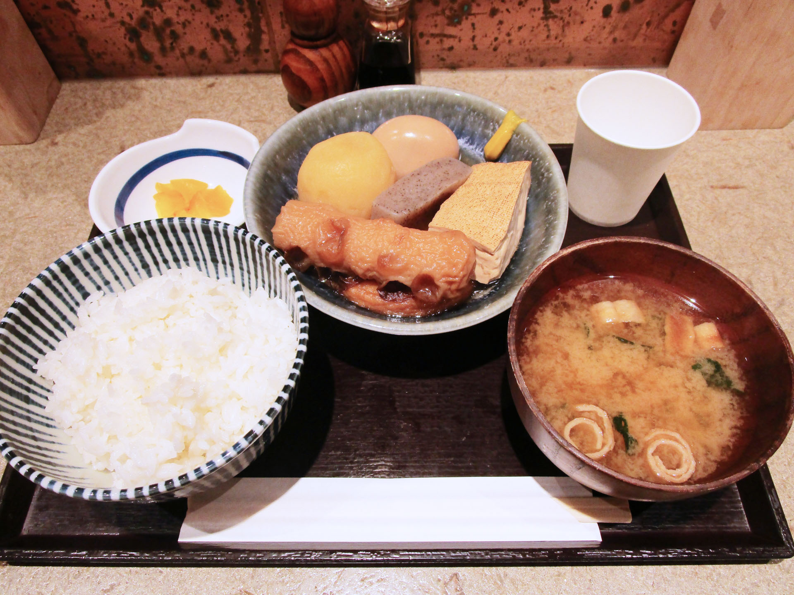
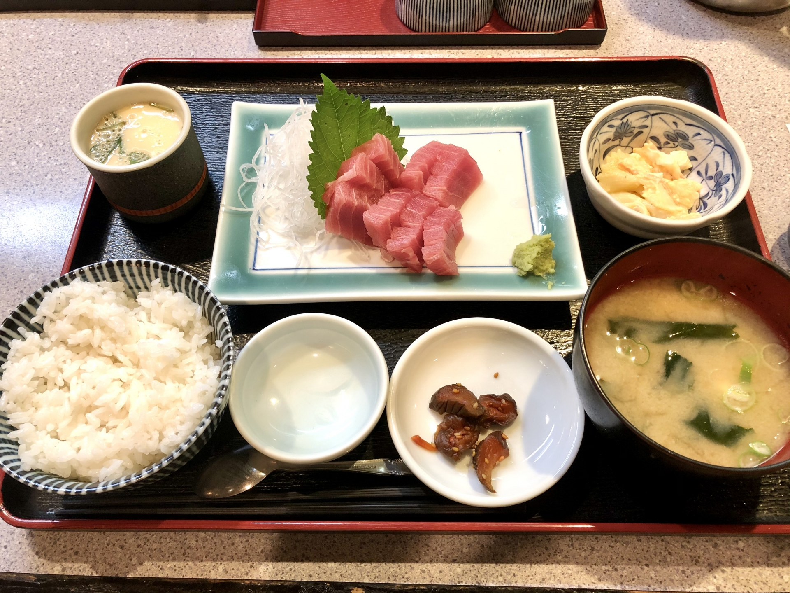
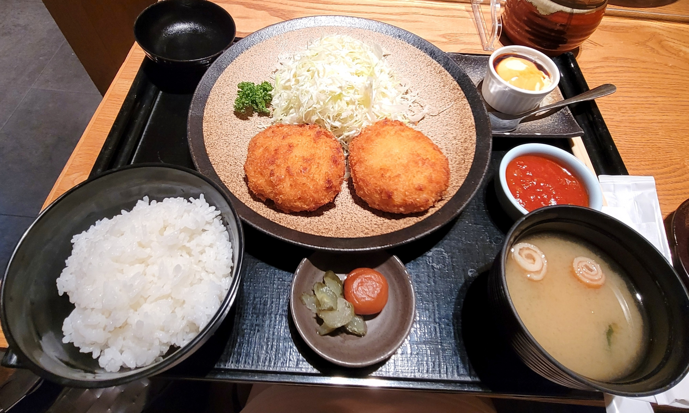

ランチメニュー
-

おでん定食
おでん4種、味噌汁、たくあん、ごはん 店主チョイスの食べ時おでん。 リクエストがあればお申し付け下さい。
-

刺身定食
おでん4種、味噌汁、たくあん、ごはん 早朝に豊洲市場で仕入れたお刺身です。
-

女将さんの気まぐれ定食
日替わりのランチセットです。 メニューは係りの者にお尋ね下さい。
※ご飯はおかわり自由です。係りの者にお申し付け下さい。
おでん4種、味噌汁、たくあん、ごはん 店主チョイスの食べ時おでん。 リクエストがあればお申し付け下さい。
おでん4種、味噌汁、たくあん、ごはん 早朝に豊洲市場で仕入れたお刺身です。
日替わりのランチセットです。 メニューは係りの者にお尋ね下さい。
※ご飯はおかわり自由です。係りの者にお申し付け下さい。